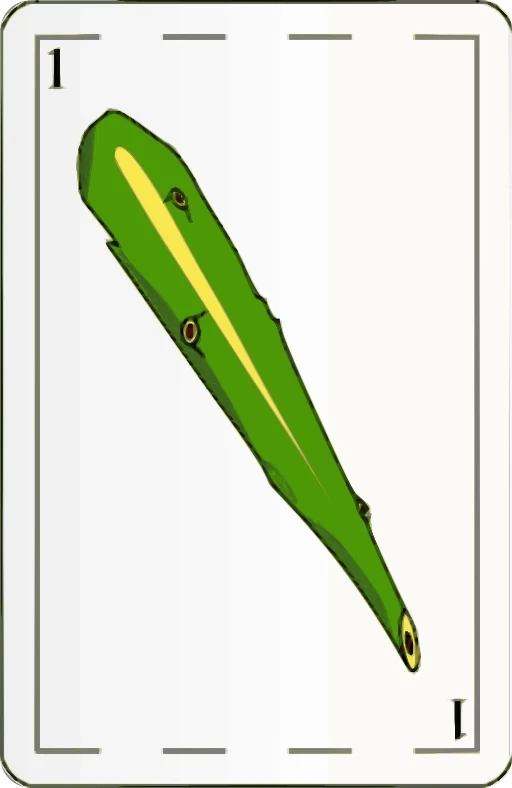
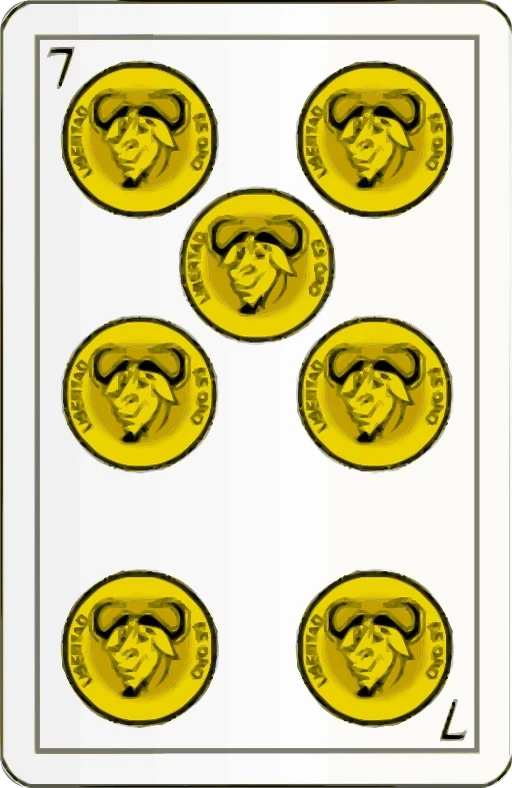
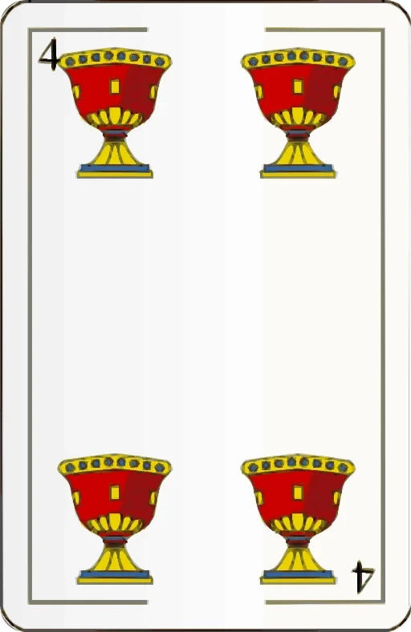

TrukeadosMarca · v2 · blanco y negro · noviembre 2026
Truco de verdad, en la mesa.
Trukeados: truco argentino online, en 3D. La interfaz es blanco y negro; el color lo ponen las cartas, los personajes y la mesa. Todo lo que sigue sale del juego.
Logo
Trukeados
El nombre · Hanken Grotesk 800 + 400 · como en el menú
Favicon · la marca blanco y negro
Trukeados
Sobre fondo claro · negro
SVG anterior, una tinta · mientras no haya logo nuevo
Dos naipes cruzados: la mano, y también la trampa de las dos encimadas. Los SVG de brand/logo/ con espada azul y oro son de antes y están por rehacerse en una tinta (ALINEACION.md §1).
Color
La interfaz: negro, blanco y grises
Aa
--bg#0a0a0a · fondo
Aa
--surface#141414 · un escalón
Aa
--surface-2#1f1f1f · dos escalones
Aa · acento
--text / --accent#f4f4f4 / #fff · 18:1
Aa
--text-dim#a8a8a8 · secundario 8,3:1
Ellos
--team1#8c8c8c · nosotros: blanco
Aa
--muted#757575 · solo créditos
Error
--red#ff5a4f · el único color
La mesa: a color, nunca en la interfaz
Paño
--pano#27523e · centro
Paño borde
--pano-3#1a4529
Madera
SCENE.wood#452a17 · theme.js
Cartas y personajesel color de la pantalla
Los palos ya no son colores de interfaz: --oro, --espada, --basto y --copa quedan en tokens.css solo como alias heredados.
Tipografía
400600700800
Hanken Grotesk, de Hanken Design Co. (Google Fonts, OFL). Una sola familia, de 400 a 800: mayúsculas grandes y apretadas para títulos, mayúsculas chicas con aire para rótulos.
Display800 · mayúsculas · −0,04 em · 52–152 px
Sentate.
Título800 · mayúsculas · −0,035 em · 36–72 px
Si te miran, te cazan.
Rótulo700 · mayúsculas · 0,08 em · 10–15 px
2 vs 2 · a 30 puntos · faltan 2
Canto700 · sin mayúsculas forzadas
¡Quiero retruco!
Bajada400 · 20–26 px
Truco argentino online, en 3D. En el navegador y en el celular.
Texto400 · 18 px / 1,55
Estás sentado en la mesa. Mirás a tu compañero, te guiña un ojo: tiene el ancho de basto. Pero el de enfrente también lo estaba mirando.
Cifra800 · tabulares
15 · 30 · 1240
Legal400 · 13 px
Cartas: diseño "Naipes Libres" de Basquetteur (Wikimedia Commons), CC BY-SA 3.0, vectorizadas por gjenkins20.
Componentes
Botones y campos
Sobre la mesa
¡Truco!Coca te miraEl RusoABCDE
NosEllos
129
Pocha muestra sus 31.
Beto dos encimadas: quedó quemado el 4 de copa.
Recursos del juego
Las cuatro grandes, y una quemada



Las 11 señas
Las caras se dibujan con characters.js del juego: abrí esta lámina servida por HTTP para verlas.